940pts-EFS-55CpGs#
Where the data at?#
Show code cell source
import pandas as pd
import sys
sys.path.append('../')
mount = '/mnt/d/'
input_path = '/mnt/d/MethylScore/Intermediate_Files/'
output_path = '/mnt/d/MethylScore/Processed_Data/'
zhou2016_probes_path = '/mnt/d/MethylScore/UnreliableProbesList_Zhou2016/EPIC.anno.GRCh38.tsv'
Load Data#
Show code cell source
# read top CpGs selected from previous code file (univariate cox-ph EWAS)
ewas_top_cpgs = pd.read_csv(output_path+'ewas_dmr/ewas_top_cpgs_efs.csv', index_col=0)
# Load clinical data
discovery_clinical_data = pd.read_csv(input_path+'discovery_clinical_data.csv',
low_memory=False, index_col=0).loc[ewas_top_cpgs.index]
# save clinical data
discovery_clinical_data.to_excel('../data/ewas_top_cpgs_clinical_data_discovery.xlsx')
print(
f' Dataset (df) contains {ewas_top_cpgs.shape[1]} columns (5mC nucleotides/probes) and {ewas_top_cpgs.shape[0]} rows (samples).')
Dataset (df) contains 112 columns (5mC nucleotides/probes) and 940 rows (samples).
Standardize Data#
Standardize the data so that mean becomes 0 and standard deviation becomes 1.
This is done to avoid biasing the model towards features with large values.
Show code cell source
def standardize_data(df, reference_df):
"""Standardize data using mean and standard deviation of reference dataset"""
# Keep only columns that are in both datasets
reference_df = reference_df.loc[:, df.columns]
# Standardize data
df = (df - reference_df.mean()) / reference_df.std()
return df
# Standardize data
x_train_m_z = standardize_data(df= ewas_top_cpgs, reference_df= ewas_top_cpgs)
# Save standardized data
# x_test_m_z.to_excel('../data/ewas_top_167_cpgs_M-Values_standardized_discovery_cohort.xlsx')
Perform multivariate CoxPH-Lasso#
Show code cell source
# Import functions to clean up clinical data
import sys
sys.path.append('../')
from source.cox_lasso_functions import *
# Run Cox-Lasso
raw_coefs = train_coxph_lasso(df=discovery_clinical_data,
event= 'efs.evnt',
time= 'efs.time',
train_x= x_train_m_z,
cv_n_split=10,
loops=10)
raw_coefs.to_csv(output_path + 'multivariate_cox_lasso/ewas_cog_os_raw_coefs_newrisk_efs.csv')
raw_coefs = pd.read_csv(output_path + 'multivariate_cox_lasso/ewas_cog_os_raw_coefs_newrisk_efs.csv', index_col=0)
Show code cell output
Running Cox-Lasso through 10 loops:
0%| | 0/10 [00:00<?, ?it/s]/home/fmarchi/projects/MethylScore/Code/.venv_py38/lib/python3.8/site-packages/sklearn/pipeline.py:405: UserWarning: all coefficients are zero, consider decreasing alpha.
self._final_estimator.fit(Xt, y, **fit_params_last_step)
/home/fmarchi/projects/MethylScore/Code/.venv_py38/lib/python3.8/site-packages/sklearn/pipeline.py:405: UserWarning: all coefficients are zero, consider decreasing alpha.
self._final_estimator.fit(Xt, y, **fit_params_last_step)
/home/fmarchi/projects/MethylScore/Code/.venv_py38/lib/python3.8/site-packages/sklearn/pipeline.py:405: UserWarning: all coefficients are zero, consider decreasing alpha.
self._final_estimator.fit(Xt, y, **fit_params_last_step)
/home/fmarchi/projects/MethylScore/Code/.venv_py38/lib/python3.8/site-packages/sklearn/pipeline.py:405: UserWarning: all coefficients are zero, consider decreasing alpha.
self._final_estimator.fit(Xt, y, **fit_params_last_step)
/home/fmarchi/projects/MethylScore/Code/.venv_py38/lib/python3.8/site-packages/sklearn/pipeline.py:405: UserWarning: all coefficients are zero, consider decreasing alpha.
self._final_estimator.fit(Xt, y, **fit_params_last_step)
/home/fmarchi/projects/MethylScore/Code/.venv_py38/lib/python3.8/site-packages/sklearn/pipeline.py:405: UserWarning: all coefficients are zero, consider decreasing alpha.
self._final_estimator.fit(Xt, y, **fit_params_last_step)
10%|█ | 1/10 [00:02<00:19, 2.14s/it]/home/fmarchi/projects/MethylScore/Code/.venv_py38/lib/python3.8/site-packages/sklearn/pipeline.py:405: UserWarning: all coefficients are zero, consider decreasing alpha.
self._final_estimator.fit(Xt, y, **fit_params_last_step)
/home/fmarchi/projects/MethylScore/Code/.venv_py38/lib/python3.8/site-packages/sklearn/pipeline.py:405: UserWarning: all coefficients are zero, consider decreasing alpha.
self._final_estimator.fit(Xt, y, **fit_params_last_step)
/home/fmarchi/projects/MethylScore/Code/.venv_py38/lib/python3.8/site-packages/sklearn/pipeline.py:405: UserWarning: all coefficients are zero, consider decreasing alpha.
self._final_estimator.fit(Xt, y, **fit_params_last_step)
/home/fmarchi/projects/MethylScore/Code/.venv_py38/lib/python3.8/site-packages/sklearn/pipeline.py:405: UserWarning: all coefficients are zero, consider decreasing alpha.
self._final_estimator.fit(Xt, y, **fit_params_last_step)
/home/fmarchi/projects/MethylScore/Code/.venv_py38/lib/python3.8/site-packages/sklearn/pipeline.py:405: UserWarning: all coefficients are zero, consider decreasing alpha.
self._final_estimator.fit(Xt, y, **fit_params_last_step)
20%|██ | 2/10 [00:03<00:11, 1.48s/it]/home/fmarchi/projects/MethylScore/Code/.venv_py38/lib/python3.8/site-packages/sklearn/pipeline.py:405: UserWarning: all coefficients are zero, consider decreasing alpha.
self._final_estimator.fit(Xt, y, **fit_params_last_step)
/home/fmarchi/projects/MethylScore/Code/.venv_py38/lib/python3.8/site-packages/sklearn/pipeline.py:405: UserWarning: all coefficients are zero, consider decreasing alpha.
self._final_estimator.fit(Xt, y, **fit_params_last_step)
/home/fmarchi/projects/MethylScore/Code/.venv_py38/lib/python3.8/site-packages/sklearn/pipeline.py:405: UserWarning: all coefficients are zero, consider decreasing alpha.
self._final_estimator.fit(Xt, y, **fit_params_last_step)
/home/fmarchi/projects/MethylScore/Code/.venv_py38/lib/python3.8/site-packages/sklearn/pipeline.py:405: UserWarning: all coefficients are zero, consider decreasing alpha.
self._final_estimator.fit(Xt, y, **fit_params_last_step)
/home/fmarchi/projects/MethylScore/Code/.venv_py38/lib/python3.8/site-packages/sklearn/pipeline.py:405: UserWarning: all coefficients are zero, consider decreasing alpha.
self._final_estimator.fit(Xt, y, **fit_params_last_step)
30%|███ | 3/10 [00:04<00:08, 1.26s/it]/home/fmarchi/projects/MethylScore/Code/.venv_py38/lib/python3.8/site-packages/sklearn/pipeline.py:405: UserWarning: all coefficients are zero, consider decreasing alpha.
self._final_estimator.fit(Xt, y, **fit_params_last_step)
/home/fmarchi/projects/MethylScore/Code/.venv_py38/lib/python3.8/site-packages/sklearn/pipeline.py:405: UserWarning: all coefficients are zero, consider decreasing alpha.
self._final_estimator.fit(Xt, y, **fit_params_last_step)
/home/fmarchi/projects/MethylScore/Code/.venv_py38/lib/python3.8/site-packages/sklearn/pipeline.py:405: UserWarning: all coefficients are zero, consider decreasing alpha.
self._final_estimator.fit(Xt, y, **fit_params_last_step)
/home/fmarchi/projects/MethylScore/Code/.venv_py38/lib/python3.8/site-packages/sklearn/pipeline.py:405: UserWarning: all coefficients are zero, consider decreasing alpha.
self._final_estimator.fit(Xt, y, **fit_params_last_step)
/home/fmarchi/projects/MethylScore/Code/.venv_py38/lib/python3.8/site-packages/sklearn/pipeline.py:405: UserWarning: all coefficients are zero, consider decreasing alpha.
self._final_estimator.fit(Xt, y, **fit_params_last_step)
/home/fmarchi/projects/MethylScore/Code/.venv_py38/lib/python3.8/site-packages/sklearn/pipeline.py:405: UserWarning: all coefficients are zero, consider decreasing alpha.
self._final_estimator.fit(Xt, y, **fit_params_last_step)
40%|████ | 4/10 [00:05<00:06, 1.16s/it]/home/fmarchi/projects/MethylScore/Code/.venv_py38/lib/python3.8/site-packages/sklearn/pipeline.py:405: UserWarning: all coefficients are zero, consider decreasing alpha.
self._final_estimator.fit(Xt, y, **fit_params_last_step)
/home/fmarchi/projects/MethylScore/Code/.venv_py38/lib/python3.8/site-packages/sklearn/pipeline.py:405: UserWarning: all coefficients are zero, consider decreasing alpha.
self._final_estimator.fit(Xt, y, **fit_params_last_step)
/home/fmarchi/projects/MethylScore/Code/.venv_py38/lib/python3.8/site-packages/sklearn/pipeline.py:405: UserWarning: all coefficients are zero, consider decreasing alpha.
self._final_estimator.fit(Xt, y, **fit_params_last_step)
50%|█████ | 5/10 [00:06<00:05, 1.11s/it]/home/fmarchi/projects/MethylScore/Code/.venv_py38/lib/python3.8/site-packages/sklearn/pipeline.py:405: UserWarning: all coefficients are zero, consider decreasing alpha.
self._final_estimator.fit(Xt, y, **fit_params_last_step)
/home/fmarchi/projects/MethylScore/Code/.venv_py38/lib/python3.8/site-packages/sklearn/pipeline.py:405: UserWarning: all coefficients are zero, consider decreasing alpha.
self._final_estimator.fit(Xt, y, **fit_params_last_step)
/home/fmarchi/projects/MethylScore/Code/.venv_py38/lib/python3.8/site-packages/sklearn/pipeline.py:405: UserWarning: all coefficients are zero, consider decreasing alpha.
self._final_estimator.fit(Xt, y, **fit_params_last_step)
/home/fmarchi/projects/MethylScore/Code/.venv_py38/lib/python3.8/site-packages/sklearn/pipeline.py:405: UserWarning: all coefficients are zero, consider decreasing alpha.
self._final_estimator.fit(Xt, y, **fit_params_last_step)
60%|██████ | 6/10 [00:07<00:04, 1.07s/it]/home/fmarchi/projects/MethylScore/Code/.venv_py38/lib/python3.8/site-packages/sklearn/pipeline.py:405: UserWarning: all coefficients are zero, consider decreasing alpha.
self._final_estimator.fit(Xt, y, **fit_params_last_step)
/home/fmarchi/projects/MethylScore/Code/.venv_py38/lib/python3.8/site-packages/sklearn/pipeline.py:405: UserWarning: all coefficients are zero, consider decreasing alpha.
self._final_estimator.fit(Xt, y, **fit_params_last_step)
/home/fmarchi/projects/MethylScore/Code/.venv_py38/lib/python3.8/site-packages/sklearn/pipeline.py:405: UserWarning: all coefficients are zero, consider decreasing alpha.
self._final_estimator.fit(Xt, y, **fit_params_last_step)
/home/fmarchi/projects/MethylScore/Code/.venv_py38/lib/python3.8/site-packages/sklearn/pipeline.py:405: UserWarning: all coefficients are zero, consider decreasing alpha.
self._final_estimator.fit(Xt, y, **fit_params_last_step)
/home/fmarchi/projects/MethylScore/Code/.venv_py38/lib/python3.8/site-packages/sklearn/pipeline.py:405: UserWarning: all coefficients are zero, consider decreasing alpha.
self._final_estimator.fit(Xt, y, **fit_params_last_step)
70%|███████ | 7/10 [00:08<00:03, 1.06s/it]/home/fmarchi/projects/MethylScore/Code/.venv_py38/lib/python3.8/site-packages/sklearn/pipeline.py:405: UserWarning: all coefficients are zero, consider decreasing alpha.
self._final_estimator.fit(Xt, y, **fit_params_last_step)
/home/fmarchi/projects/MethylScore/Code/.venv_py38/lib/python3.8/site-packages/sklearn/pipeline.py:405: UserWarning: all coefficients are zero, consider decreasing alpha.
self._final_estimator.fit(Xt, y, **fit_params_last_step)
/home/fmarchi/projects/MethylScore/Code/.venv_py38/lib/python3.8/site-packages/sklearn/pipeline.py:405: UserWarning: all coefficients are zero, consider decreasing alpha.
self._final_estimator.fit(Xt, y, **fit_params_last_step)
/home/fmarchi/projects/MethylScore/Code/.venv_py38/lib/python3.8/site-packages/sklearn/pipeline.py:405: UserWarning: all coefficients are zero, consider decreasing alpha.
self._final_estimator.fit(Xt, y, **fit_params_last_step)
/home/fmarchi/projects/MethylScore/Code/.venv_py38/lib/python3.8/site-packages/sklearn/pipeline.py:405: UserWarning: all coefficients are zero, consider decreasing alpha.
self._final_estimator.fit(Xt, y, **fit_params_last_step)
80%|████████ | 8/10 [00:09<00:02, 1.06s/it]/home/fmarchi/projects/MethylScore/Code/.venv_py38/lib/python3.8/site-packages/sklearn/pipeline.py:405: UserWarning: all coefficients are zero, consider decreasing alpha.
self._final_estimator.fit(Xt, y, **fit_params_last_step)
/home/fmarchi/projects/MethylScore/Code/.venv_py38/lib/python3.8/site-packages/sklearn/pipeline.py:405: UserWarning: all coefficients are zero, consider decreasing alpha.
self._final_estimator.fit(Xt, y, **fit_params_last_step)
/home/fmarchi/projects/MethylScore/Code/.venv_py38/lib/python3.8/site-packages/sklearn/pipeline.py:405: UserWarning: all coefficients are zero, consider decreasing alpha.
self._final_estimator.fit(Xt, y, **fit_params_last_step)
/home/fmarchi/projects/MethylScore/Code/.venv_py38/lib/python3.8/site-packages/sklearn/pipeline.py:405: UserWarning: all coefficients are zero, consider decreasing alpha.
self._final_estimator.fit(Xt, y, **fit_params_last_step)
90%|█████████ | 9/10 [00:10<00:01, 1.05s/it]/home/fmarchi/projects/MethylScore/Code/.venv_py38/lib/python3.8/site-packages/sklearn/pipeline.py:405: UserWarning: all coefficients are zero, consider decreasing alpha.
self._final_estimator.fit(Xt, y, **fit_params_last_step)
/home/fmarchi/projects/MethylScore/Code/.venv_py38/lib/python3.8/site-packages/sklearn/pipeline.py:405: UserWarning: all coefficients are zero, consider decreasing alpha.
self._final_estimator.fit(Xt, y, **fit_params_last_step)
/home/fmarchi/projects/MethylScore/Code/.venv_py38/lib/python3.8/site-packages/sklearn/pipeline.py:405: UserWarning: all coefficients are zero, consider decreasing alpha.
self._final_estimator.fit(Xt, y, **fit_params_last_step)
/home/fmarchi/projects/MethylScore/Code/.venv_py38/lib/python3.8/site-packages/sklearn/pipeline.py:405: UserWarning: all coefficients are zero, consider decreasing alpha.
self._final_estimator.fit(Xt, y, **fit_params_last_step)
/home/fmarchi/projects/MethylScore/Code/.venv_py38/lib/python3.8/site-packages/sklearn/pipeline.py:405: UserWarning: all coefficients are zero, consider decreasing alpha.
self._final_estimator.fit(Xt, y, **fit_params_last_step)
/home/fmarchi/projects/MethylScore/Code/.venv_py38/lib/python3.8/site-packages/sklearn/pipeline.py:405: UserWarning: all coefficients are zero, consider decreasing alpha.
self._final_estimator.fit(Xt, y, **fit_params_last_step)
100%|██████████| 10/10 [00:11<00:00, 1.13s/it]
Cox-Lasso Trained Successfuly!
Selected alpha value: [0.013894667175673019]
Set Threshold#
Show code cell source
mean_coefs = set_cutoff(coefs=raw_coefs,threshold=0.99)
plot_nonzero_coef_freq(raw_coefs, mean_coefs, threshold=0.99, savefig=False, fig_path=None, figsize=(10,4))
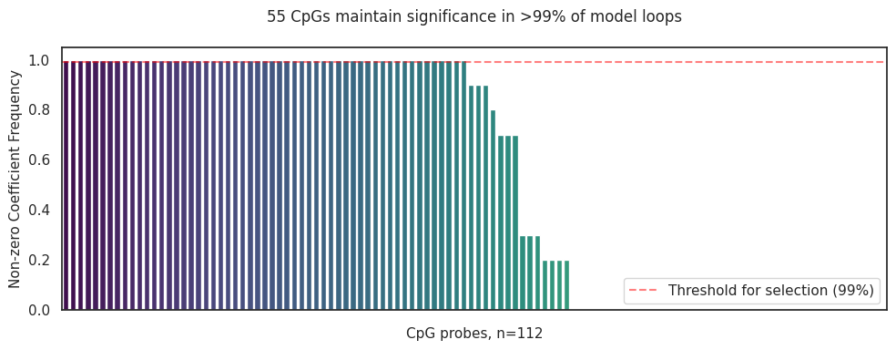
Save table of CpGs coefficients with EWAS results#
Show code cell source
# Load `ewas_cpgs_top_OS_with_EFSinfo.xlsx`
# ewas_cpgs_top_OS_with_EFSinfo = pd.read_excel('../data/ewas_cpgs_top_OS_with_EFSinfo.xlsx', index_col=0)\
# .join(mean_coefs.to_frame('MethylScoreAML Px Coefs')).sort_values('MethylScoreAML Px Coefs', ascending=False)\
# .to_excel('../data/ewas_cpgs_top_OS_with_EFSinfo_with_MethylScoreAML_Px_Coefs.xlsx')
Generate Model Results#
Discovery Dataset#
Show code cell source
score_name = 'MethylScore55_NewRiskEFS'
df, threshold = generate_coxph_score(coef_mean=mean_coefs,
x=x_train_m_z,
df=discovery_clinical_data,
score_name=score_name,
train_test="train",
rpart_outcome='efs.time')
# df.to_excel(output_path + 'multivariate_cox_lasso/ewas_cog_efs_MethylScoreAML_Px_efs.xlsx')
Continuous score cut at the value of 0.1934
Show code cell source
sns.histplot(data=df,x=score_name, bins=50, hue = score_name + ' Categorical' )
# add vertical line at threshold and third quartile
plt.axvline(threshold ,color='blue', linestyle='--')
# add legend
plt.title('Distribution of ' + score_name + ' in COG trials')
Text(0.5, 1.0, 'Distribution of MethylScore55_NewRiskEFS in COG trials')
Show code cell source
import seaborn as sns
import matplotlib.pyplot as plt
# create scatterplot
sns.scatterplot(data=df, x=score_name, y='efs.time', alpha=0.8)
# use hexbin plot to show density
ax = plt.gca()
ax.hexbin(df[score_name], df['os.time'], gridsize=50, cmap='Blues')
# add title
plt.title('Hexbin Scatterplot of {} in COG trials'.format(score_name))
# add vertical line at threshold
plt.axvline(threshold, color='red', linestyle='--', label='Threshold')
plt.legend()
# save plot as png
# plt.savefig(path + '/Hexbin_Scatterplot_{}_efs.time_{}.png'.format(score_name, len(df)),
# bbox_inches='tight', dpi=300)
plt.show()
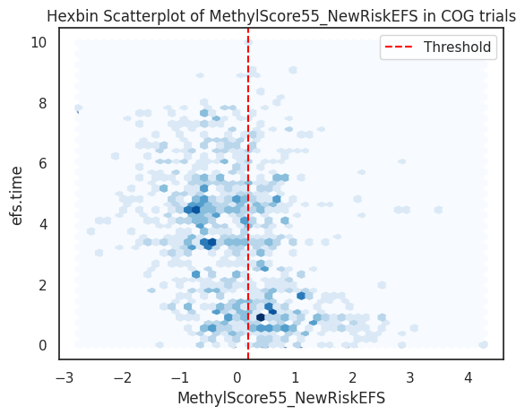
Kaplan-Meier Plots#
Overall study population#
Show code cell source
# Import Plotting Functions
from source.data_visualization_functions import *
draw_kaplan_meier(scorename=score_name,
df=df,
save_plot=False,
save_survival_table=True,
add_risk_counts=False,
trialname='COG trials')
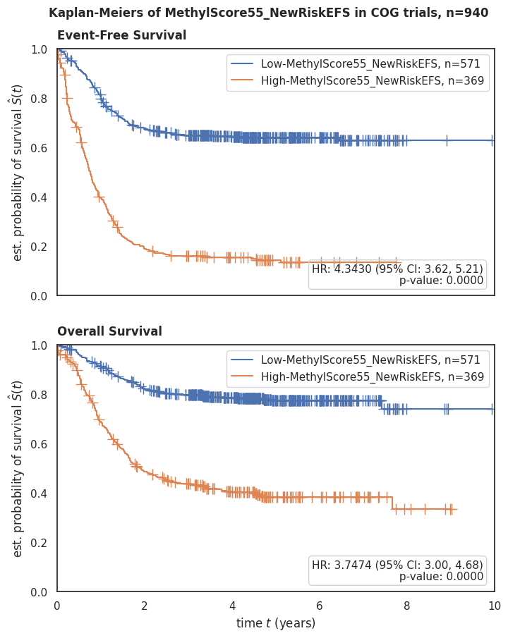
Per risk group#
Show code cell source
draw_kaplan_meier(scorename=score_name,
df=df[df['Risk Group'] == 'High Risk'],
save_plot=False,
save_survival_table=False,
add_risk_counts=False,
trialname='COG trials, High Risk Group')
draw_kaplan_meier(scorename=score_name,
df=df[df['Risk Group'] == 'Low Risk'],
save_plot=False,
save_survival_table=False,
add_risk_counts=False,
trialname='COG trials, Low Risk Group')
draw_kaplan_meier(scorename=score_name,
df=df[df['Risk Group'] == 'Standard Risk'],
save_plot=False,
save_survival_table=False,
add_risk_counts=False,
trialname='COG trials, Standard Risk Group')
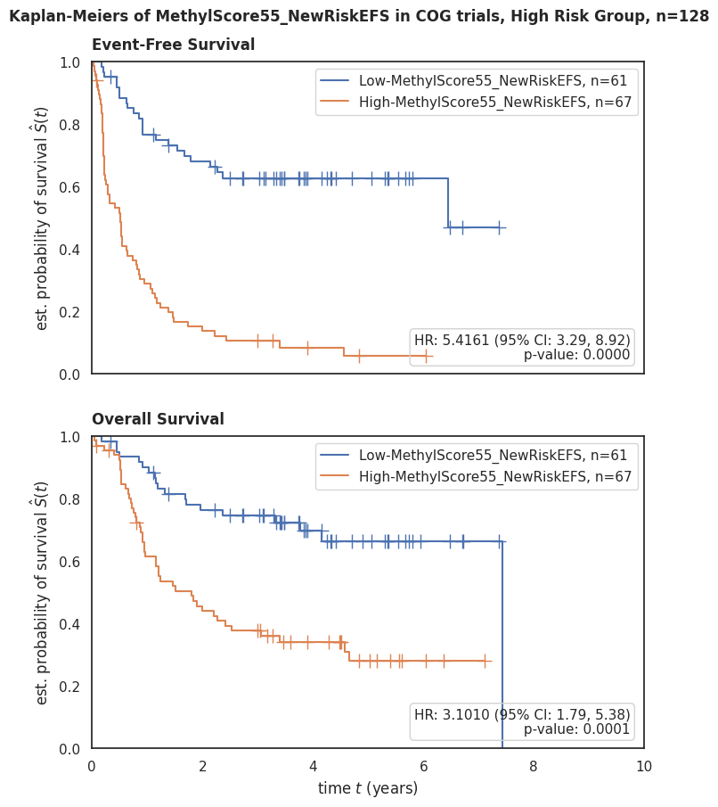
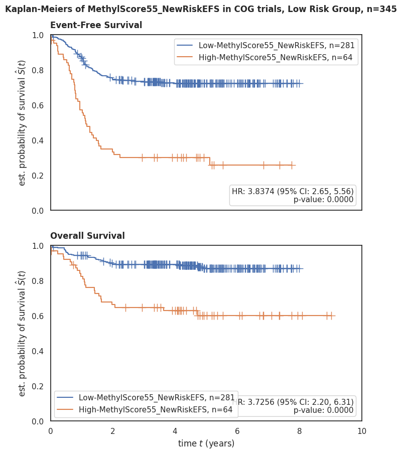
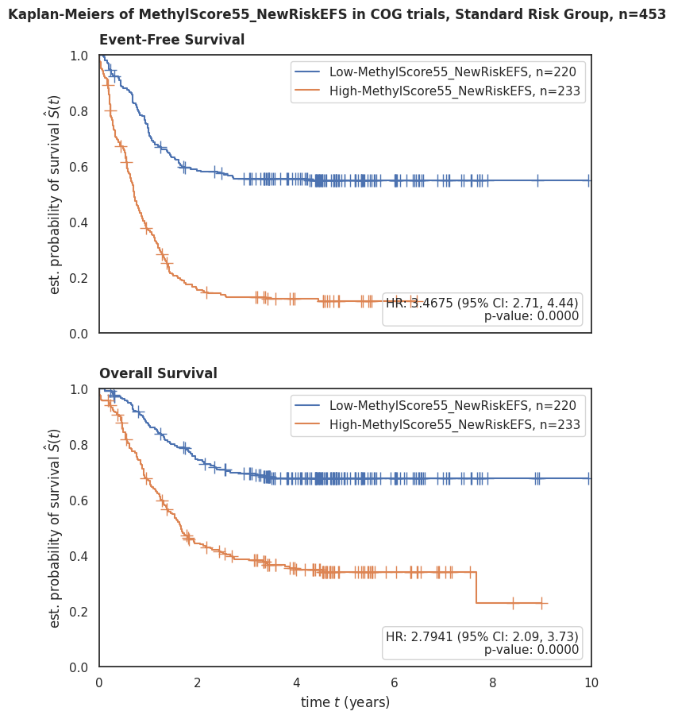
Updated risk group#
Show code cell source
new_risk = pd.read_csv(input_path + 'updated_risk_group_COG_RR_1-10-2024/COG_risk_added_v2_cleanedFM.csv',
index_col=0,)
df2 = df.join(new_risk[['Cyto/Molecular Risk']])
draw_kaplan_meier(scorename=score_name,
df=df2[df2['Cyto/Molecular Risk'] == 'High'],
save_plot=False,
save_survival_table=False,
add_risk_counts=False,
trialname='COG trials, High Risk Group')
draw_kaplan_meier(scorename=score_name,
df=df2[df2['Cyto/Molecular Risk'] == 'Low'],
save_plot=False,
save_survival_table=False,
add_risk_counts=False,
trialname='COG trials, Low Risk Group')
draw_kaplan_meier(scorename=score_name,
df=df2[df2['Cyto/Molecular Risk'] == 'Standard'],
save_plot=False,
save_survival_table=False,
add_risk_counts=False,
trialname='COG trials, Standard Risk Group')
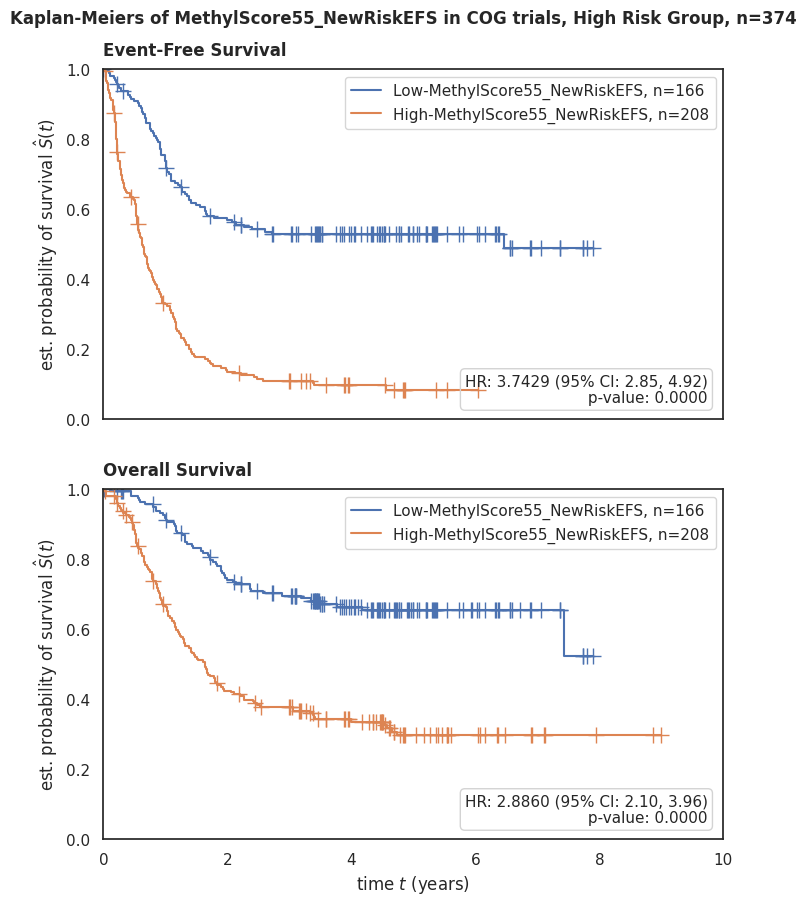
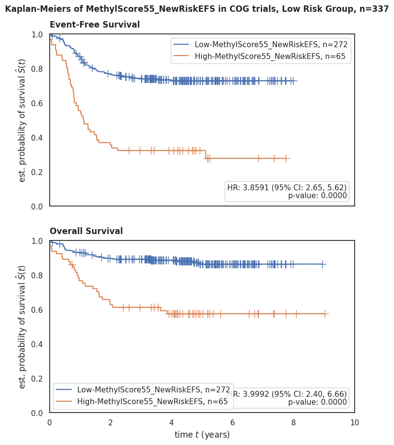
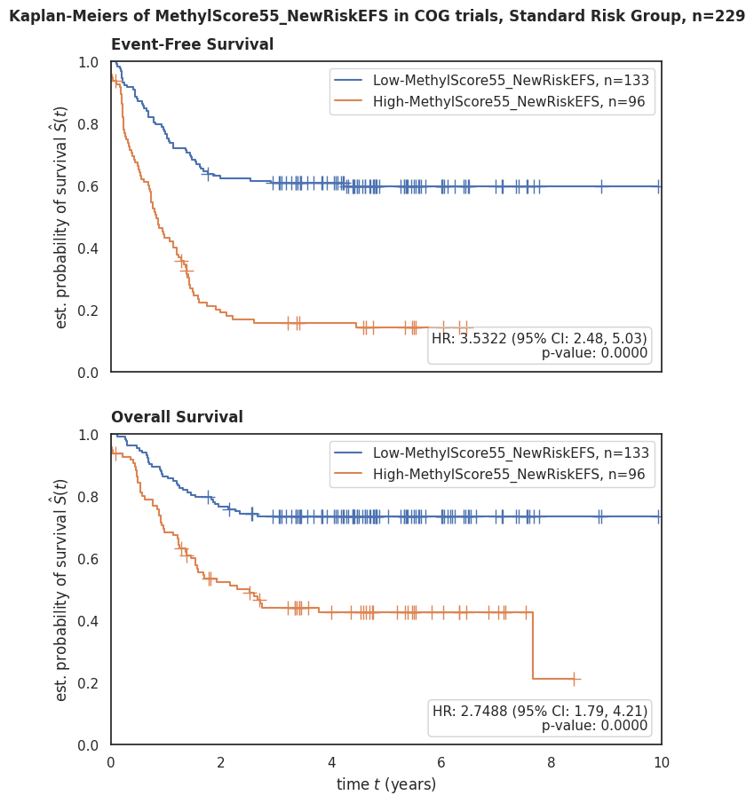
Forest Plots#
With MRD 1#
Show code cell source
draw_forest_plot(time='os.time',
event='os.evnt',
df=df,
trialname='COG trials:',
scorename=score_name,
save_plot=False)
draw_forest_plot(time='efs.time',
event='efs.evnt',
df=df,
trialname='COG trials:',
scorename=score_name,
save_plot=False)
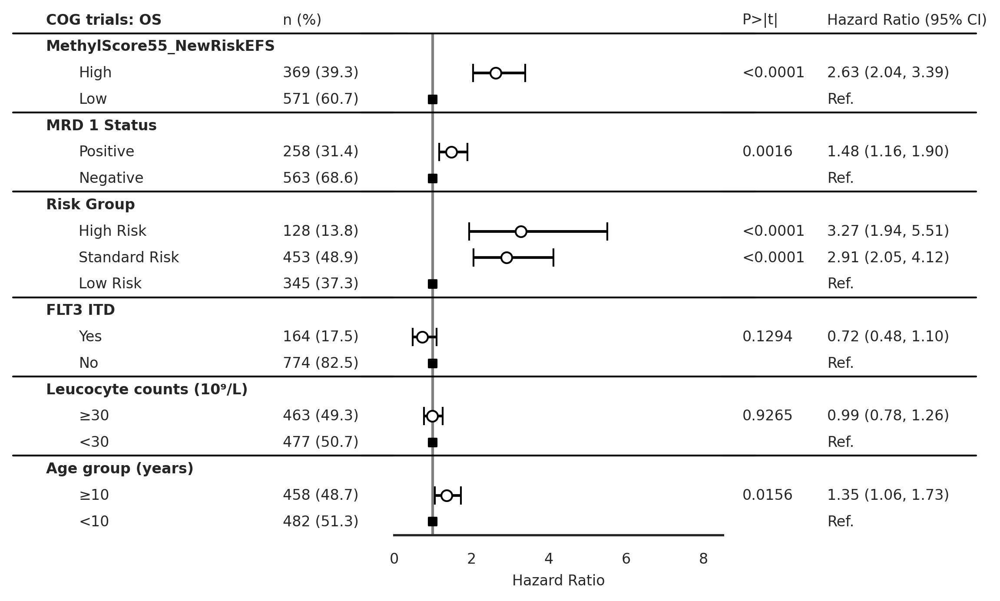
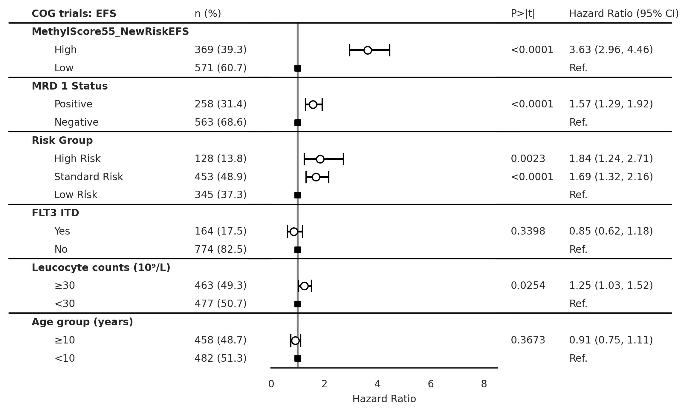
Without MRD 1#
Show code cell source
draw_forest_plot_noMRD(time='os.time',
event='os.evnt',
df=df,
trialname='COG trials:',
scorename=score_name,
save_plot=False)
draw_forest_plot_noMRD(time='efs.time',
event='efs.evnt',
df=df,
trialname='COG trials:',
scorename=score_name,
save_plot=False)
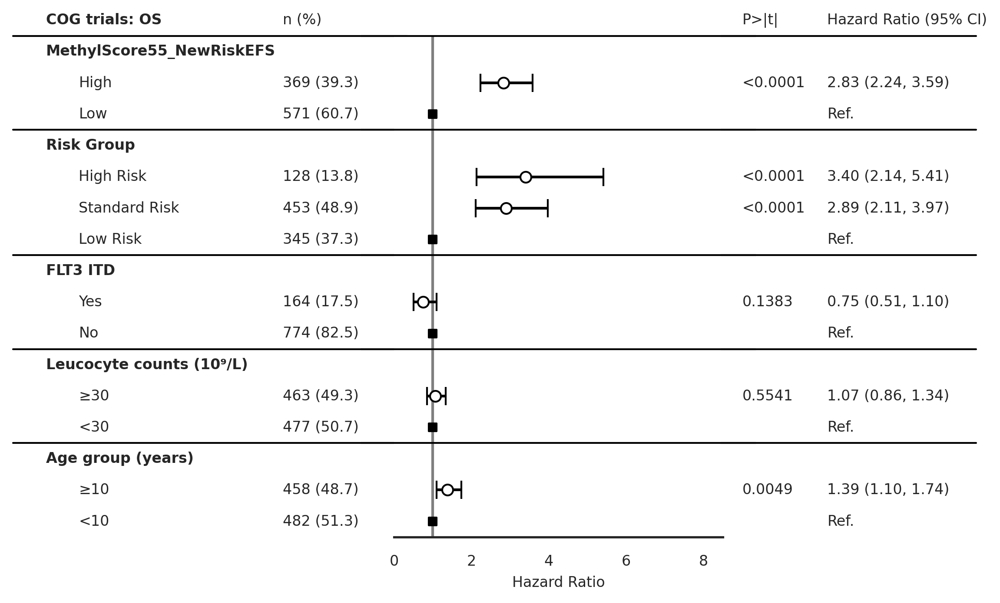
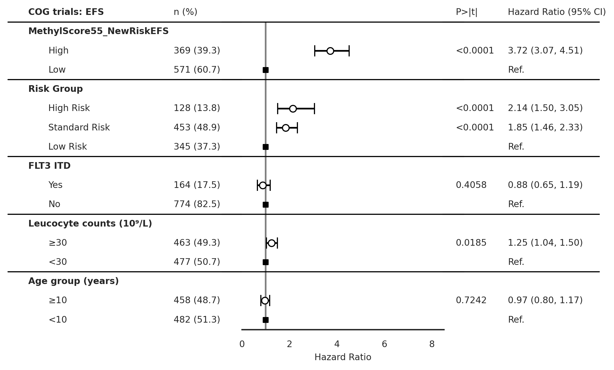
ROC AUC#
Show code cell source
# Your current preprocessing
df['Risk Group bins'] = df['Risk Group'].replace({'Low Risk':0, 'Standard Risk':0.5, 'High Risk':1})
df['MRD 1 bins'] = df['MRD 1 Status'].replace({'Negative':0, 'Positive':1})
df2 = df[['os.evnt', score_name + '_cat_bin', 'Risk Group bins', 'MRD 1 bins']].dropna()
# rename column `MethylScoreAML_Px_cat_bin` to `MethylScoreAML Px`
df2 = df2.rename(columns={score_name + '_cat_bin':score_name})
# Add new columns based on standardized values
df2['MRD1 + Risk Group'] = df['MRD 1 bins'] + df['Risk Group bins']
df2['MRD1 + Risk Group + MethylScore'] = df['MRD 1 bins'] + df['Risk Group bins'] + df[score_name]
import matplotlib.pyplot as plt
from sklearn.metrics import roc_curve, auc
from sklearn.preprocessing import LabelBinarizer
def plot_roc_auc(df, score_columns, outcome_column, trial_name='discovery cohort'):
"""
Plots the ROC AUC curves for multiple models given a dataframe and multiple score columns.
Parameters:
- df (pd.DataFrame): Dataframe containing the score and outcome columns.
- score_columns (list of str): List of names of columns that contain the scores.
- outcome_column (str): The name of the column that contains the true outcomes.
Returns:
None
"""
plt.figure()
plt.title('ROC AUC in ' + trial_name + ', n={}'.format(len(df)))
# plot random guessing line
plt.plot([0, 1], [0, 1], 'r--')
# binarize the outcome variable
lb = LabelBinarizer()
lb.fit(df[outcome_column])
y = lb.transform(df[outcome_column])
# Loop over score_columns to plot multiple ROC curves
for score_column in score_columns:
# calculate the fpr and tpr for all thresholds of the classification
fpr, tpr, threshold = roc_curve(y, df[score_column])
roc_auc = auc(fpr, tpr)
# plot ROC curve for this score_column
plt.plot(fpr, tpr, label=f'{score_column} AUC = %0.2f' % roc_auc)
# set x and y limits
plt.xlim([0, 1])
plt.ylim([0, 1])
# set x and y labels
plt.ylabel('True Positive Rate')
plt.xlabel('False Positive Rate')
# add legend
plt.legend(loc='lower right')
plt.show()
# Example Usage:
score_columns = [score_name, 'Risk Group bins', 'MRD 1 bins', 'MRD1 + Risk Group', 'MRD1 + Risk Group + MethylScore']
outcome_column = 'os.evnt'
plot_roc_auc(df2, score_columns, outcome_column)
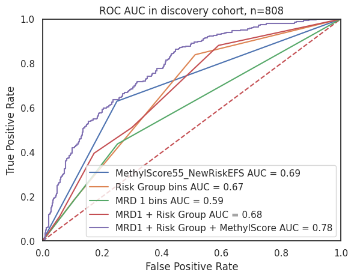
Box Plots#
Show code cell source
draw_boxplot(df=discovery_clinical_data,x='Risk Group', y=score_name,
order=['High Risk', 'Standard Risk', 'Low Risk'],
trialname='COG', hue=score_name + ' Categorical',
save_plot=False, figsize=None)
draw_boxplot(df=discovery_clinical_data,x='MRD 1 Status', y=score_name,
order=['Positive','Negative'],
trialname='COG', hue=score_name + ' Categorical',
save_plot=False, figsize=None)
draw_boxplot(df=discovery_clinical_data,x='Primary Cytogenetic Code', y=score_name,
order='auto',
trialname='COG', hue=score_name + ' Categorical',
save_plot=False, figsize=None)
p-value annotation legend:
ns: p <= 1.00e+00
*: 1.00e-02 < p <= 5.00e-02
**: 1.00e-03 < p <= 1.00e-02
***: 1.00e-04 < p <= 1.00e-03
****: p <= 1.00e-04
High Risk vs. Standard Risk: Kruskal-Wallis independent samples (pairwise between groups) with Bonferroni correction, P_val:8.541e-01 Stat=1.144e+00
Standard Risk vs. Low Risk: Kruskal-Wallis independent samples (pairwise between groups) with Bonferroni correction, P_val:4.213e-27 Stat=1.184e+02
High Risk vs. Low Risk: Kruskal-Wallis independent samples (pairwise between groups) with Bonferroni correction, P_val:4.257e-18 Stat=7.737e+01
p-value annotation legend:
ns: p <= 1.00e+00
*: 1.00e-02 < p <= 5.00e-02
**: 1.00e-03 < p <= 1.00e-02
***: 1.00e-04 < p <= 1.00e-03
****: p <= 1.00e-04
Positive vs. Negative: Kruskal-Wallis independent samples (pairwise between groups) with Bonferroni correction, P_val:5.766e-09 Stat=3.391e+01
Stacked Bar Plots#
Show code cell source
draw_stacked_barplot(df=discovery_clinical_data,x='MRD 1 Status', y=score_name,
order=['Positive','Negative'],
trialname='COG', hue=score_name + ' Categorical',
save_plot=False, figsize=None)
draw_stacked_barplot(df=discovery_clinical_data,x='Risk Group', y=score_name,
order=['High Risk', 'Standard Risk', 'Low Risk'],
trialname='COG', hue=score_name + ' Categorical',
save_plot=False, figsize=None, fontsize=9)
draw_stacked_barplot(df=discovery_clinical_data,x='Primary Cytogenetic Code', y=score_name,
order='auto',
trialname='COG', hue=score_name + ' Categorical',
save_plot=False, figsize=None, fontsize=8)
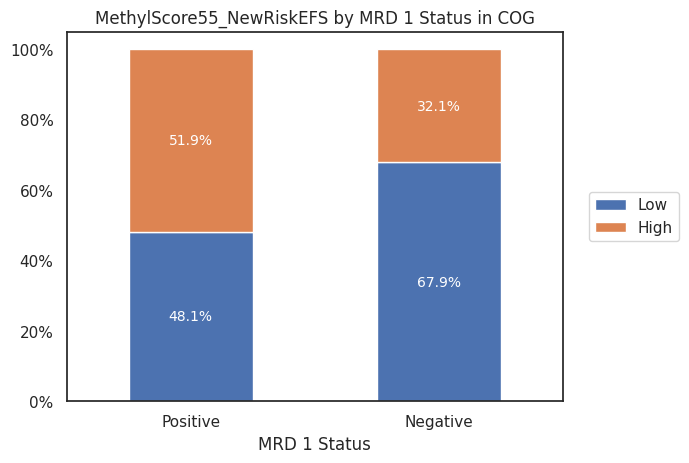
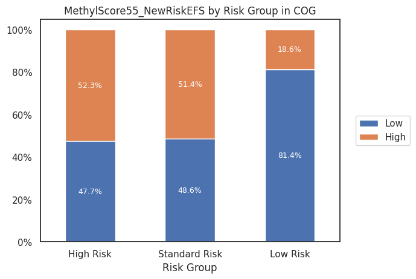
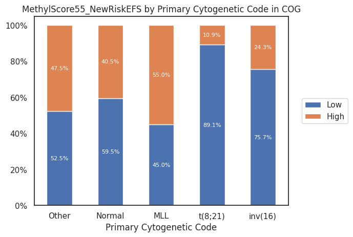
Patient Characteristics Table#
Overall study population#
Show code cell source
from tableone import TableOne
columns = ['Age (years)','Age group (years)','Sex','Race or ethnic group',
'Hispanic or Latino ethnic group', 'MRD 1 Status',
'Leucocyte counts (10⁹/L)', 'BM Leukemic blasts (%)',
'Risk Group', 'Clinical Trial','FLT3 ITD']
discovery_clinical_data['Age (years)'] = discovery_clinical_data['Age (years)'].astype(float)
mytable_cog = TableOne(discovery_clinical_data, columns,
overall=False, missing=True,
pval=False, pval_adjust=False,
htest_name=True,dip_test=True,
tukey_test=True, normal_test=True,
order={'FLT3 ITD':['Yes','No'],
'Race or ethnic group':['White','Black or African American','Asian'],
'MRD 1 Status': ['Positive'],
'Risk Group': ['High Risk', 'Standard Risk'],
'FLT3 ITD': ['Yes'],
'Leucocyte counts (10⁹/L)': ['≥30'],
'Age group (years)': ['≥10']})
# mytable_cog.to_csv(output_path + 'multivariate_cox_lasso/tableone_discovery_cohort.csv')
mytable_cog.tabulate(tablefmt="html",
headers=[score_name,"",'Missing','Discovery Cohort','Low','p-value','Statistical Test'])
| MethylScore55_NewRiskEFS | Missing | Discovery Cohort | |
|---|---|---|---|
| n | 940 | ||
| Age (years), mean (SD) | 0 | 9.4 (6.3) | |
| Age group (years), n (%) | ≥10 | 0 | 458 (48.7) |
| <10 | 482 (51.3) | ||
| Sex, n (%) | Female | 0 | 466 (49.6) |
| Male | 474 (50.4) | ||
| Race or ethnic group, n (%) | White | 64 | 692 (79.0) |
| Black or African American | 102 (11.6) | ||
| Asian | 43 (4.9) | ||
| American Indian or Alaska Native | 5 (0.6) | ||
| Native Hawaiian or other Pacific Islander | 6 (0.7) | ||
| Other | 28 (3.2) | ||
| Hispanic or Latino ethnic group, n (%) | Hispanic or Latino | 29 | 184 (20.2) |
| Not Hispanic or Latino | 727 (79.8) | ||
| MRD 1 Status, n (%) | Positive | 119 | 258 (31.4) |
| Negative | 563 (68.6) | ||
| Leucocyte counts (10⁹/L), n (%) | ≥30 | 0 | 463 (49.3) |
| <30 | 477 (50.7) | ||
| BM Leukemic blasts (%), mean (SD) | 67 | 63.8 (24.5) | |
| Risk Group, n (%) | High Risk | 14 | 128 (13.8) |
| Standard Risk | 453 (48.9) | ||
| Low Risk | 345 (37.3) | ||
| Clinical Trial, n (%) | AAML03P1 | 0 | 36 (3.8) |
| AAML0531 | 507 (53.9) | ||
| AAML1031 | 397 (42.2) | ||
| FLT3 ITD, n (%) | Yes | 2 | 164 (17.5) |
| No | 774 (82.5) |
By MethylScore category#
Show code cell source
from tableone import TableOne
columns = ['Age (years)','Age group (years)','Sex','Race or ethnic group',
'Hispanic or Latino ethnic group', 'MRD 1 Status',
'Leucocyte counts (10⁹/L)', 'BM Leukemic blasts (%)',
'Risk Group', 'Clinical Trial','FLT3 ITD']
discovery_clinical_data['Age (years)'] = discovery_clinical_data['Age (years)'].astype(float)
mytable_cog = TableOne(discovery_clinical_data, columns,
overall=False, missing=True,
pval=True, pval_adjust=False,
htest_name=True,dip_test=True,
tukey_test=True, normal_test=True,
order={'FLT3 ITD':['Yes','No'],
'Race or ethnic group':['White','Black or African American','Asian'],
'MRD 1 Status': ['Positive'],
'Risk Group': ['High Risk', 'Standard Risk'],
'FLT3 ITD': ['Yes'],
'Leucocyte counts (10⁹/L)': ['≥30'],
'Age group (years)': ['≥10']},
groupby=score_name + ' Categorical')
mytable_cog.to_csv(output_path + 'multivariate_cox_lasso/tableone_discovery_methylscoreaml_px.csv')
mytable_cog.to_excel('../data/tableone_discovery_methylscoreaml_px.xlsx')
mytable_cog.tabulate(tablefmt="html",
headers=[score_name,"",'Missing','High','Low','p-value','Statistical Test'])
| MethylScore55_NewRiskEFS | Missing | High | Low | p-value | Statistical Test | |
|---|---|---|---|---|---|---|
| n | 571 | 369 | ||||
| Age (years), mean (SD) | 0 | 9.4 (6.3) | 9.3 (6.3) | 0.810 | Two Sample T-test | |
| Age group (years), n (%) | ≥10 | 0 | 273 (47.8) | 185 (50.1) | 0.529 | Chi-squared |
| <10 | 298 (52.2) | 184 (49.9) | ||||
| Sex, n (%) | Female | 0 | 293 (51.3) | 173 (46.9) | 0.208 | Chi-squared |
| Male | 278 (48.7) | 196 (53.1) | ||||
| Race or ethnic group, n (%) | White | 64 | 423 (79.4) | 269 (78.4) | 0.139 | Chi-squared (warning: expected count < 5) |
| Black or African American | 52 (9.8) | 50 (14.6) | ||||
| Asian | 29 (5.4) | 14 (4.1) | ||||
| American Indian or Alaska Native | 4 (0.8) | 1 (0.3) | ||||
| Native Hawaiian or other Pacific Islander | 5 (0.9) | 1 (0.3) | ||||
| Other | 20 (3.8) | 8 (2.3) | ||||
| Hispanic or Latino ethnic group, n (%) | Hispanic or Latino | 29 | 115 (20.7) | 69 (19.4) | 0.684 | Chi-squared |
| Not Hispanic or Latino | 440 (79.3) | 287 (80.6) | ||||
| MRD 1 Status, n (%) | Positive | 119 | 124 (24.5) | 134 (42.5) | <0.001 | Chi-squared |
| Negative | 382 (75.5) | 181 (57.5) | ||||
| Leucocyte counts (10⁹/L), n (%) | ≥30 | 0 | 246 (43.1) | 217 (58.8) | <0.001 | Chi-squared |
| <30 | 325 (56.9) | 152 (41.2) | ||||
| BM Leukemic blasts (%), mean (SD) | 67 | 58.8 (24.5) | 71.8 (22.3) | <0.001 | Two Sample T-test | |
| Risk Group, n (%) | High Risk | 14 | 61 (10.9) | 67 (18.4) | <0.001 | Chi-squared |
| Standard Risk | 220 (39.1) | 233 (64.0) | ||||
| Low Risk | 281 (50.0) | 64 (17.6) | ||||
| Clinical Trial, n (%) | AAML03P1 | 0 | 14 (2.5) | 22 (6.0) | 0.022 | Chi-squared |
| AAML0531 | 310 (54.3) | 197 (53.4) | ||||
| AAML1031 | 247 (43.3) | 150 (40.7) | ||||
| FLT3 ITD, n (%) | Yes | 2 | 90 (15.8) | 74 (20.1) | 0.114 | Chi-squared |
| No | 479 (84.2) | 295 (79.9) |
Fetch gene annotation#
Show code cell source
# Load manifest
zhou2016_probes = pd.read_csv(zhou2016_probes_path,sep='\t',
index_col=0)[['chrm','start', 'end', 'GeneNames','GeneClasses','CGIPosition']]
# Get probes from Zhou et al. (2016) that are in ewasOS_un.index
mean_coefs_genes = zhou2016_probes.loc[list(ewas_top_cpgs.columns)]\
.join(mean_coefs.to_frame('MethylScore Coefficients'), how='left')\
.sort_values(by='MethylScore Coefficients', ascending=False)
# `GeneNames`, `GeneClasses`, and `TranscriptIDs` columns contain multiple genes separated by `;` so we need to keep only the unique ones
mean_coefs_genes['GeneNames'] = mean_coefs_genes['GeneNames'].apply(lambda x: ';'.join(set(x.split(';'))))
mean_coefs_genes['GeneClasses'] = mean_coefs_genes['GeneClasses'].apply(lambda x: ';'.join(set(x.split(';'))))
# Transform `GeneNames` values separated by `;` into a list
mean_coefs_genes['GeneNames'] = mean_coefs_genes['GeneNames'].apply(lambda x: x.split(';'))
# If there are multiple genes in `GeneNames` or `GeneClasses`, we will add one row for each gene
mean_coefs_genes = mean_coefs_genes.explode('GeneNames')
# Save the dataframe to a CSV file
mean_coefs_genes.to_excel('../data/MethylScoreAML_Px_167_cpg_genes.xlsx')
mean_coefs_genes.to_csv(output_path + 'multivariate_cox_lasso/methylScore_coxph_167_cpg_signature.csv')
from itables import show
show(mean_coefs_genes, classes="display nowrap cell-border")
| chrm | start | end | GeneNames | GeneClasses | CGIPosition | MethylScore Coefficients | |
|---|---|---|---|---|---|---|---|
| probeID | |||||||
| Loading... (need help?) |
Watermark#
Author: Francisco_Marchi@Lamba_Lab_UF
Python implementation: CPython
Python version : 3.8.16
IPython version : 8.12.2
pandas : 2.0.2
seaborn : 0.12.2
matplotlib : 3.7.1
tableone : 0.7.12
sklearn : 1.2.2
lifelines : 0.27.7
statannotations: 0.5.0
Compiler : GCC 11.3.0
OS : Linux
Release : 5.15.133.1-microsoft-standard-WSL2
Machine : x86_64
Processor : x86_64
CPU cores : 20
Architecture: 64bit